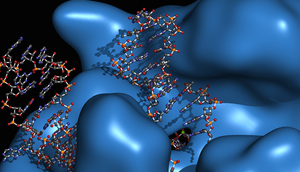

At Genesis BioHealth, we offer a unique product line designed to easily deliver a
wide
variety of nutrients needed by the body to effectively achieve effective cellular
repair
and regeneration as well as effective calcium metabolism in general.
To produce our line of powder based products, we use a proprietary blend of
magnesium salts
of the highest quality instead of a typical filler. In this way, virtually the
entire volume
of the capsule is devoted to active ingredients. This way, none of the capsules
contents are
wasted with detrimental fillers, processing aids, and other excipients. We offer a
range of
products designed to be used either together or individually. This gives our clients
the
flexibility to customize an evolving supplement regimen with great flexibility.
By mixing and matching our products over time nutrient dosage ratios can easily be
adjusted
on a day-to-day basis as needed. The most common combination of products to start
with is
Magnesium and Regenesis DATM. The Essential Minerals – CompleteTM product can be
added later
to include calcium and other important trace minerals. As an example, consuming 4
capsules
of Regenesis DATM and 4 capsules of Magnesium, the provide the user with
approximately 2 mg
of K2-MK4 and 450 mg of elemental magnesium. While we have not shown the values for
the
other nutrients they can likewise be tabulated for the example.
Another important aspect of using a three product approach is to allow a client to
gently
titrate the dosage of K2-MK4 upwards or downwards over time while maintaining steady
magnesium targets. It is common for nutrient deficient persons who have never taken
K2-MK4
and magnesium together in the proper ratio to experience some harmless but
significant side
effects in the first few weeks. This is because the body is now able to begin to
work on
dormant repair projects in the body. As the body’s calcium and K2 chemistry start to
work
normally, many changes to the body’s physiology are renewed. In these cases it is
advisable,
especially for elderly consumers, to titrate the dose of K2-MK4 up from an initially
low
dosage to a higher dosage gradually over a time period. This is advised so as to
minimize
some of the potential negative side effects sometimes experienced . Normal side
effects
include temporary increases in localized aches and pains, feelings of anxiety or
euphoria,
headaches, diarrhea, sleep pattern disruption, excessive energy, over productivity
etc.
The symptoms associated with K2-MK4 and magnesium acclimation are normal. They serve
as an
indication that the body is beginning to mobilize its stray calcium and is beginning
to
improve its overall metabolism. This, in turn, begins increasing the tissue
remodeling rates
to optimal levels and also begins to decalcify the joints, soft tissues and organs.
In fact,
these symptoms are an indication of a body which has existed in a state of long term
energy
and nutrient rationing and is now beginning to operate more normally and is
beginning to
repair the body from the ravages of the deficiencies. These transitory changes can
be
considered an indication of good things to come. In many cases, the user must pass
through a
few weeks of these symptoms while the fat soluble nutrient gaps are closed. During
this
process the tissues are re-saturated, the body’s reserves start to accumulate, and
dormant
process are re-initiated. As these temporary conditions gradually fade into the past
over a
period of time and the body begins to regenerate and operate closer to peak
capacity, many
users come to realize they had lived their whole lives in a nutrient-deprived state.
We recommend a person who has not previously had experience with K2-MK4, in proper
combination with the other activators, to start their regimen at 0.5 mg/day of
K2-MK4. This
amount is contained by a single serving of any of our RegenesisTM branded capsule
products.
Once stabilized on the initial dosage, a user should begin to work up into the range
of 2-3
mg of K2-MK4 spread out over the day. This dosage protocol would then consist of 4-6
capsules of RegenesisTM, respectively. The desired magnesium balanced dosage of
K2-MK4
should be established incrementally over a 2-4 week timeframe or longer. Even though
early
trials for K2-MK4 were performed with much higher dosages, levels above 2 mg are not
necessary for therapeutic benefit. This is true as long as appropriate levels of
magnesium,
vitamin D3, vitamin A, and other limiting nutrients are available. At first, a
person’s
reserves for one or more of these nutrients may be depleted. Such a situation can
cause
irregularity in perceived symptoms as the body begins to make use of the new
resources and
adapt to higher nutrient levels in “fits-and-starts”. Eventually, the storage
reserves for
all these nutrients will grow large enough to allow the body to provide stable
day-to-day
flows of nutrients drawn from ample reserves without having to resort to rationing.
Because of the critical dependency of K2 chemistry on magnesium, we strongly advise
customers to consistently maintain an elemental magnesium intake at 350-800 mg. By
using our
two product approach and changing capsule ratios over time, an ideal regimen can be
achieved.
Typically we find that a 2-3 mg daily dose of K2, in balanced combination with the
other
nutrients in our formula, is able to initiate a wide range of very significant
healing
processes in many people in a reproducible way. Generally, over a 2-8 month period
many
positive changes can be experienced by a person who has been nutrient-limited for a
long
period of time. Because the changes initiated by K2-MK4 chemistry significantly
increase the
body’s demand for magnesium, it is very important to keep high levels of magnesium
available. Cases of K2 driven magnesium deficiencies have been reported by those
failing to
consume enough magnesium relative to K2-MK4. We therefore stress again the
importance of
this situation.
Our proprietary blend, being comprised only of fully reacted chelate species to
maximum
bioavailability, delivers roughly 10% elemental magnesium by weight. Obtaining 400
mg of
elemental magnesium then requires about 4 grams of our powder blend. These
properties of
high quality magnesium chelates, therefore, require a user to consume relatively
large
amounts each day. Because of the large dosage requirements for quality magnesium
chelates,
we consider that our capsule size is an optimal balance of size, flexibility, and
ease of
swallowing. Our products are presented in standard size “0” capsules, each holding
approximately 620 mg of powder. This makes for a compact and easy to swallow capsule
that is
less than 2 cm long and 0.8 cm wide (18.4 mm x 7.3 mm). This smaller than typical
capsule
size makes it very convenient to mix and match capsules of different product types
throughout the day to customize a regimen. We find it best to take the K2 containing
RegenesisTM products in the morning and early afternoon, and the Magnesium capsules
in the
evening and before bed, thus helping to establish a good sleeping pattern.
The primary benefits of our product line are simplicity, purity and flexibility. We
hope you
choose to join our clientele and can experience the excellence of our products.
At Genesis BioHealth, we offer a unique product line designed to easily deliver a
wide
variety of nutrients needed by the body to effectively achieve effective cellular
repair
and regeneration as well as effective calcium metabolism in general.
Due to a tragic chain of events, the amazing impact of vitamin K2-MK4 was initially misunderstood. Recently, the science surrounding K2-MK4 has begun to illuminate the amazing power of providing the body with sufficient amounts of a variety of fat-soluble nutrients. The history of vitamin K2 discovery is a significant one and told elsewhere. The research surrounding K2-MK4 and other cooperating nutrients is fascinating. Learn more in our “K2 Overview/Science” Section, follow our Blog, and connect with us on our Facebook page.

At Genesis BioHealth, we offer a unique product line designed to easily deliver a
wide
variety of nutrients needed by the body to effectively achieve effective cellular
repair
and regeneration as well as effective calcium metabolism in general.
In the human body there is arguably no single nutrient with more widespread health impact than magnesium. As the body’s 4th most abundant mineral, it is vital to over 350 different biochemical pathways critical to life and health. In part, magnesium is a cofactor and catalyst for the creation, activation, and maintenance of a variety of recently discovered enzymes, called “Vitamin K Dependent Protein(s)” or “VKDP” for short. These VKDP have been shown to be critically involved with a wide range of chemical processes surrounding maintenance, repair, energy creation, signaling, and communication at the cellular level.
Along with magnesium, vitamins D3, A, and K2-MK4 have also been shown to be signaling agents, regulators, raw materials, and activators for the successful construction and utilization of the same VKDP. This means that in order for these critical restorative enzymes to be constructed and then used effectivly by the body, all these nutrients have to to work together to achieve a common set of goals. Most people are at least partially deficient in one or more of these critical nutrients, preventing the body from effectively synthesizing a full complement of VKDP. This, in turn, allows age-related illness to manifest more rapidly than necessary because many vital functions are nutrient-limited and, therefore, not able to keep pace with cellular demand. Keeping adequate cellular stores of the fat-soluble activators, magnesium, healthy fats, and other basic minerals, can help ensure that a person is able to fuel and regulate the full spectrum of the body’s natural repair and maintenance processes. When the body’s fat soluble metabolism starts to operate at full capability, it can begin to repair and fuel the body at peak capacity. The increased capacity for celluar regeneration and energy utilization, in-turn, causes a significantly larger magnesium demand. This is the reason why high quality absorbable magnesium is the foundation of our product line.
Our balanced combination of products makes it easy for a user to createand evolve a customized dosage regimen that allows the ratio of key nutrients to be continually optimized over time. This system ideally supports customers who want to get as much nutrition as possible from natural sources, but would also like the convenience of a flexible supplement system that can be tailored to meet individual needs.
At Genesis BioHealth, we offer a unique product line designed to easily deliver a
wide
variety of nutrients needed by the body to effectively achieve effective cellular
repair
and regeneration as well as effective calcium metabolism in general.
At Genesis BioHealth, we endeavor to provide the purest supplement experience possible. We use no fillers or excipients of any kind, excepting our DA line, where we pass on about 0.1%. This means our least pure product is 99.9% of the active ingredients of our formulae. We use top quality fully reacted mineral chelates and vitamins that must pass our rigorous QC qualification via independent testing. We have a dedicated manufacturing facility and all our processes meet or exceed cGMP specifications. With our products, you can trust that each bottle will provide the purity and efficacy that only top quality raw materials can provide, and nothing else.
We originally created each of our products for our own usage, and that of our family. Our goal, both then and now, was to deliver a line of products that maximizes health impact by offering a wide range of the most essential nutrients missing from a standard diet, and by requiring as few compact capsules as possible. The individual products in our multi-capsule system are designed to work together over time, allowing the user to mix and match the various capsules. This method allows the delivery of a wide range of nutrients in a customized way whose dosages can be evolved and optimized over time. Finally, we wanted our capsules to cause no detrimental side effects in the GI tract or otherwise. This was so our bodies would only see nutrients that nature intended and that each ingredient would be delivered at therapeutic dosages.
We hope you will decide to try our products. We know that if you do, you won’t be disappointed.